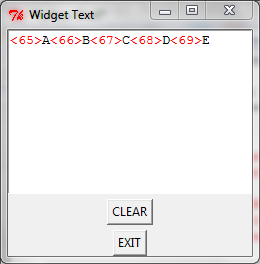

Le langage python
3 et l'Interface Graphique Tkinter
|
| Le widget Text |
| background
(bg) |
Couleur du widget "red",
"blue", "green", "yellow", . . . ou #rrvvbb |
| borderwidth
(bd) |
Epaisseur
de la bordure en pixels. Défaut=2. améliore l'effet de relief |
| cursor |
Curseur de la souris
quand celle-ci survole le widget |
| font |
Fonte
par défaut du texte inséré. exemple: font="arial 8
italic bold" |
| foreground
(fg) |
Couleur
du texte |
| height |
hauteur
du widget en lignes de texte |
| padx |
Marge
horizontale du texte par rapport aux limites du bouton padx=3 => 3 pixels, padx='3m' => 3 mm, padx='1c' => 1 cm, padx='0.5i' => 0.5 inch |
| pady |
Marges
verticales |
| relief |
Relief du
bouton. Défaut = RAISED |
| state |
Permet
d'activer (NORMAL) ou de désactiver (DISABLED) un bouton je n'ai pas bien compris le rôle de la valeur ACTIVE |
| width |
Largeur
du widget en caractère |
En plus des méthodes universelles , ce widget supporte les méthodes:
| .delete(index1,
[index2]) |
Supprime les caractères dont les indices sont compris
entre index1 et index2 (non inclus) text1.delete(1.0,1.4) supprime les caractères n° 0, 1, 2, 3 de la 1ère ligne Edit1.delete(1.4) supprime le caractères n° 4 del 1ère ligne (le 5ème ) Edit1.delete(1.0,END) supprime tous les caractères du widget |
| .get(index1, index2) |
Retourne
la chaine qui commence à index1 et se termine à index2 |
| .index(indice) |
Retourne
sous forme de string 'l.c' la position de l'index
indice |
| .insert(index,
str, []) |
Insère
la chaine str avant le caractère n° index. le
paramètre optionnel tag permet d'appliquer un format particulier
au texte inséré |
Les indices ont la forme l.c ou 'l.c' ou "l.c" les lignes commencent à 1 et les colonnes commencent à 0. Il est conseillé d'utiliser les guillemets car 3.20 et interprété comme 3.2
INSERT ou "insert" : position courante du curseur clavier
CURRENT ou "current" : position courante du curseur souris
END ou "end" : Fin du widget
"l.end" : Fin de la ligne l
"insert+3char" ou "insert+3c" : position courante du curseur plus 3 caractère
========================supprimer la ligne courrante ========================
curseur = text1.index(INSERT) # retourne une chaine de la forme 'l.c', il faut maintenant isoler le l
================== formater le texte inséré ==========================
text1.tag_config('rouge', foreground ='red') # définir le tag nommé rouge
========================== on peut aussi faire comme ça, c'est moins pratique===============
avant = text1.index(INSERT)========== formater une zone quelconque ===================
text1.tag_add('tag1', '3.5', '3.10')Exemple:
|
'''
chaque fois qu'un caractère est tapé dans le widget Text, il déclenche l'événement <Key> qui appelle la procedure clavier. Celle ci affiche le code ascii du caractère entre <> en rouge Pour que le caractère soit affiché avant son code ASCII, on peut remplacer l'événement <Key> par <KeyRelease> ''' from tkinter import * fp = Tk() # fenetre principale fp.title("Widget Text") def clavier(eve): text1.insert(INSERT,'<'+str(ord(eve.char))+'>', 'rouge') def clrscr(): text1.delete(1.0, END) text1= Text(fp, width=60, height =20) text1.bind("<Key>", clavier) # essayez aussi <KeyRelease> text1.tag_config('rouge', foreground ='red') text1.pack() Button(fp, text='CLEAR', command = clrscr).pack(pady=5) Button(fp, text='EXIT', command=fp.destroy).pack() fp.mainloop() |